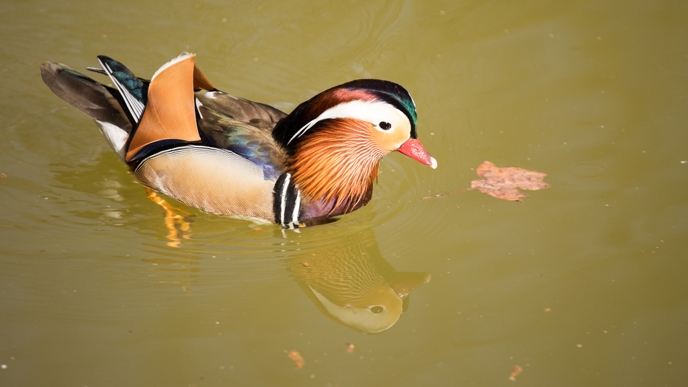
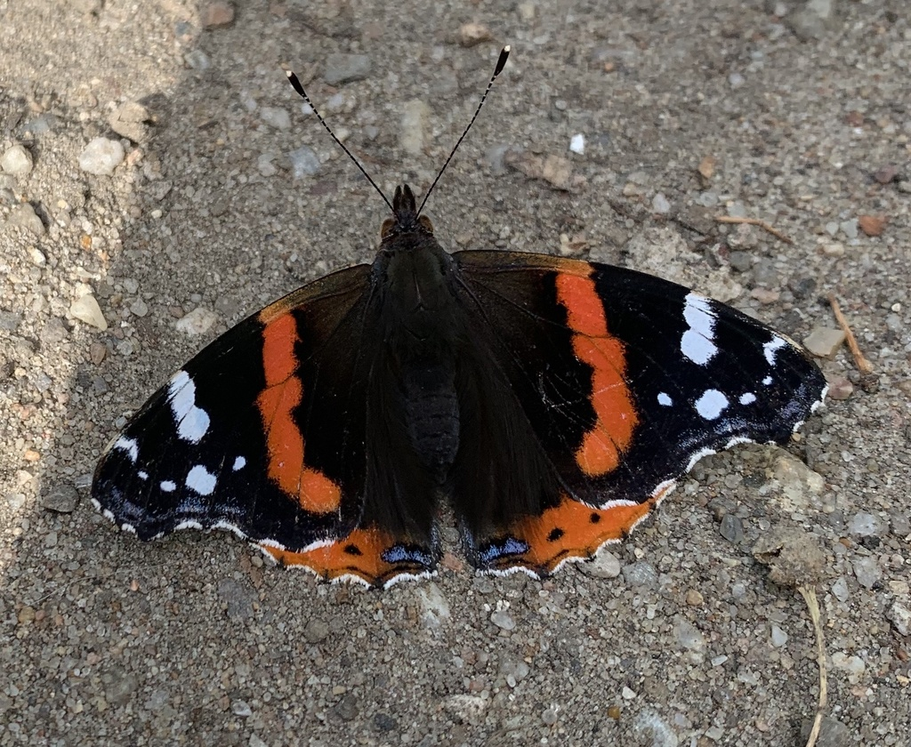
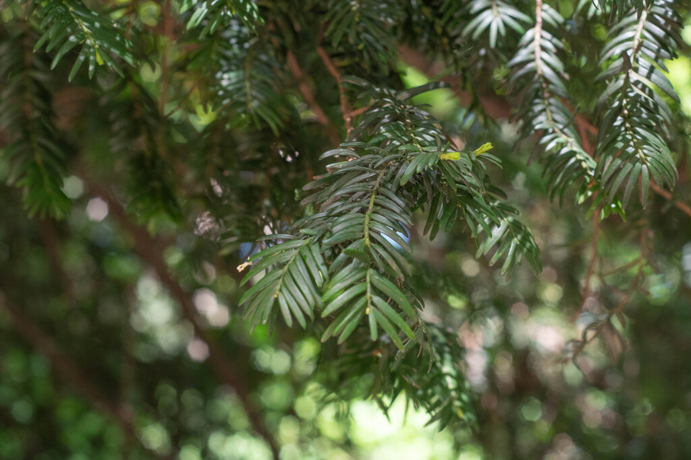
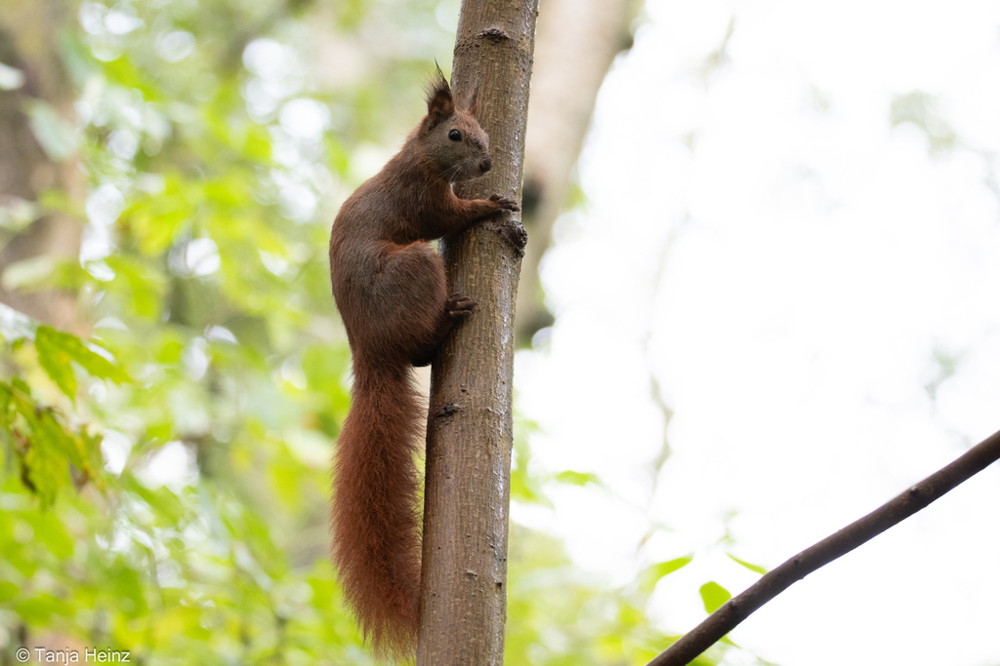
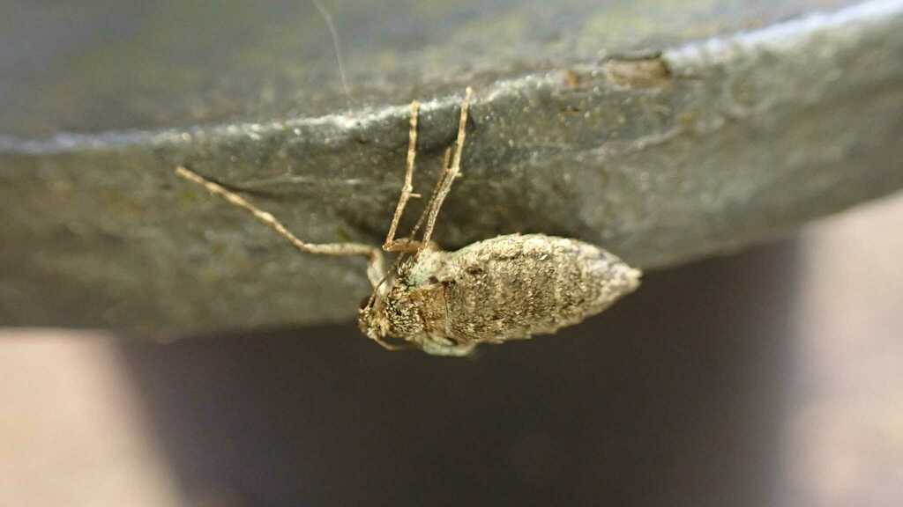
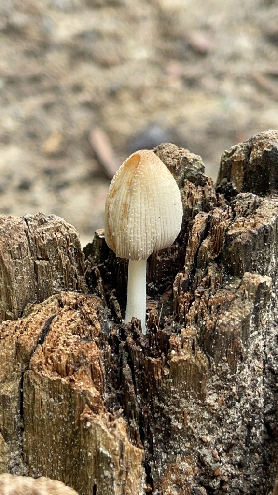

Beobachtungen im Volkspark Friedrichshain
| Kategorien |

Mandarinente
Lateinischer Name: Aix galericulata
Gesichtet am 10. April 2020
Art: Vogel

Admiral
Lateinischer Name: Pyrameis atalanta
Gesichtet am 23. August 2020
Art: Insekt

Eibe
Lateinischer Name: Taxus baccata
Gesichtet am 28. April 2025
Art: Pflanze

Eurasisches Eichhörnchen
Lateinischer Name:
Gesichtet am 22. Oktober 2023
Art: Säugetier

Kleiner Frostspanner
Lateinischer Name: Operophtera brumata
Gesichtet am 15. November 2023
Art: Insekt

Tingling
Lateinischer Name: Coprinus sensu lato
Gesichtet am 06. August 2023
Art: Pilz